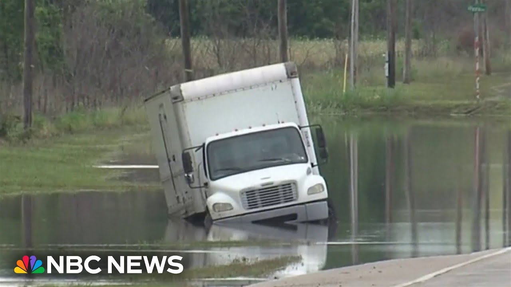

【数千万人面临恶劣天气威胁】
Summary: Severe weather is hitting cities across the US, with heavy rain, strong winds, and tornadoes causing damage, power outages, and fatalities.
摘要： 恶劣天气袭击美国多地，暴雨、强风和龙卷风造成破坏、停电和人员伤亡。

⏱️ Estimated Reading Time: 2 min
📚 六级生词 📚 雅思生词 📚 托福生词 📚 GRE生词 📚 视频里的生词
Tonight, more severe weather pummeling cities across the country.
今晚，更恶劣的天气席卷全国多个城市。
This weekend, heavy rain and strong winds battering communities across the eastern half of the US.
本周末，暴雨和强风袭击美国东半部的多个社区。
In central Alabama, blustery winds and heavy downpours causing near zero visibility.
在阿拉巴马州中部，狂风和暴雨导致能见度几乎为零。
Torrential rain soaking the Atlanta metro area.
暴雨浸透了亚特兰大都会区。
In Oklahoma, vehicles stuck in high water.
在俄克拉荷马州，车辆被困在积水中。
Crews racing to reopen this highway.
工作人员正紧急抢通这条高速公路。
Here in Mallister, neighbors woke up to tornado warnings.
在马利斯特，居民们被龙卷风警报惊醒。
After taking cover and emerging from their shelters, they found some of their historic downtown in pieces.
躲避并离开避难所后，他们发现历史悠久的市中心部分区域已成废墟。
It's been a rough day.
这是艰难的一天。
This is what is left of Shelby Tatum's family antique store.
这是谢尔比·塔图姆家族古董店仅剩的部分。
Their 100-year-old building left mangled by a storm they say sounded like a train.
这座百年建筑被一场听起来像火车的风暴摧毁。
What does it mean now that it's destroyed?
现在它被毁了，这意味着什么？
It's rough.
情况很糟糕。
We're hoping that it's fixable.
我们希望还能修复。
Meanwhile, up north, an ongoing threat from Canadian wildfire smoke causing hazy conditions in places like Chicago.
与此同时，北部地区持续受到加拿大野火烟雾的威胁，芝加哥等地出现雾霾天气。
The risk for severe weather continuing for 44 million people tomorrow with Oklahoma and Texas possibly seeing 100 mileph winds.
明天，4400万人仍面临恶劣天气风险，俄克拉荷马州和得克萨斯州可能出现时速100英里的强风。
And the Mississippi governor announcing on social media one person has died after a tree fell on a car there.
密西西比州州长在社交媒体上宣布，一棵树砸中一辆汽车，导致一人死亡。
Over 20,000 people in Mississippi are without power.
密西西比州超过2万人断电。
Jose.
何塞。